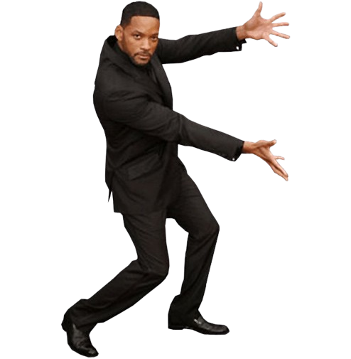

mover para a direita
mover para a esquerda
mover para cima
mover para baixo
deslizar para direita
deslizar para esquerda
aponte para a direção
ir para a direção
ir para posição aleatória
seguir o mouse
voltar ao início
"dizer" olá por "n" segundo(s)
trocar o avatar
"resetar" o avatar
trocar o cenário
"resetar" o cenário
diminuir o avatar
aumentar o avatar
esconder o avatar
mostrar o avatar
tocar o som
parar o som
aumentar volume
diminuir volume
